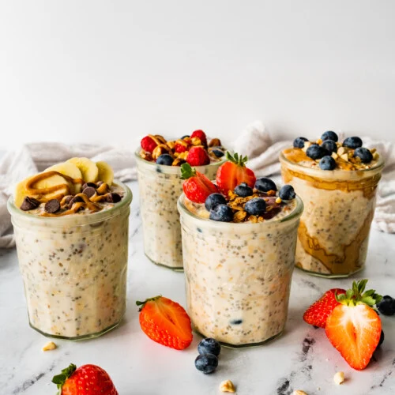
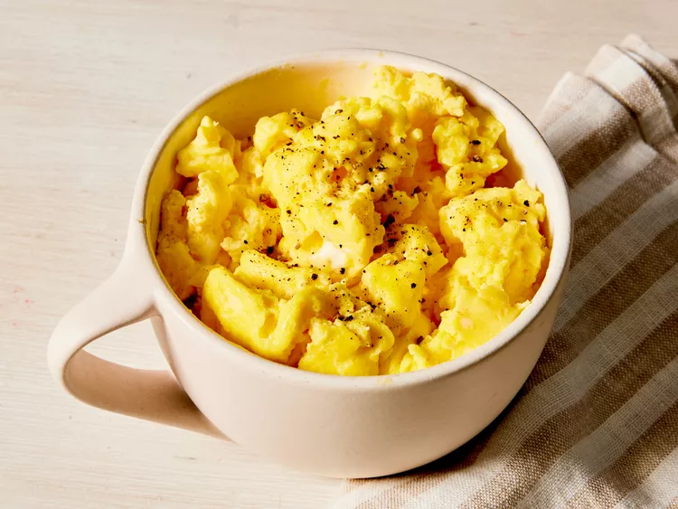
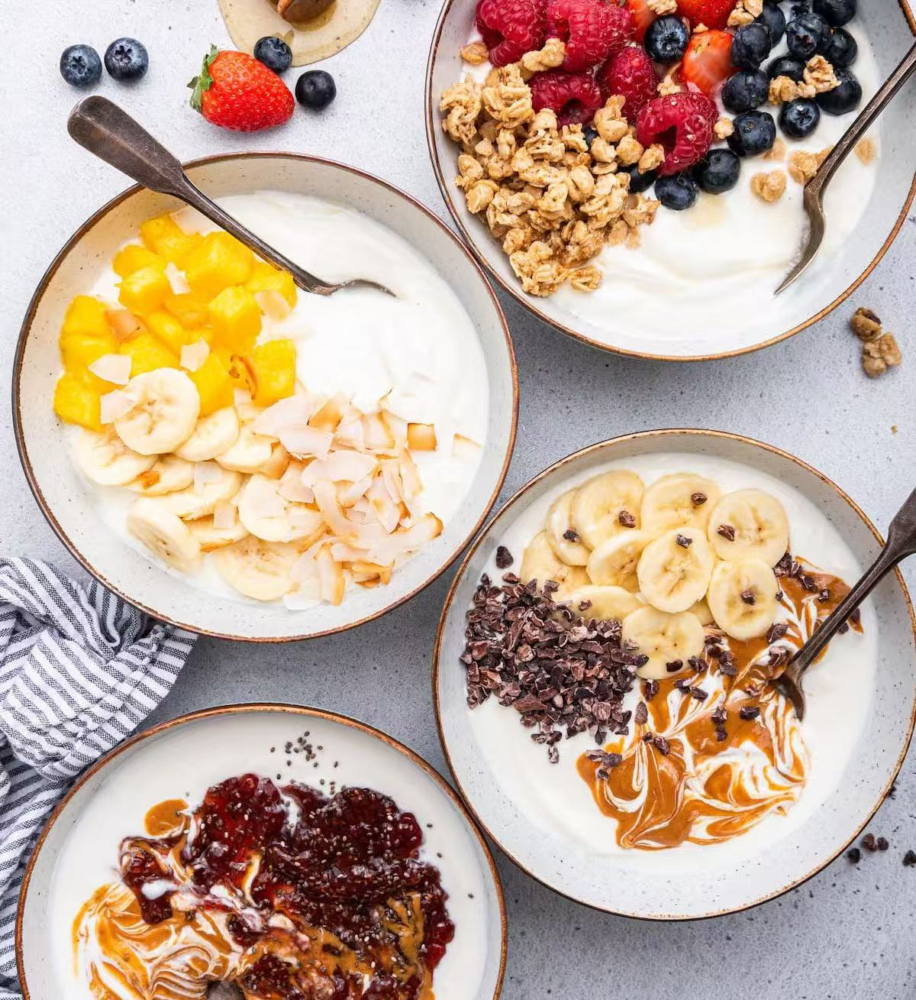
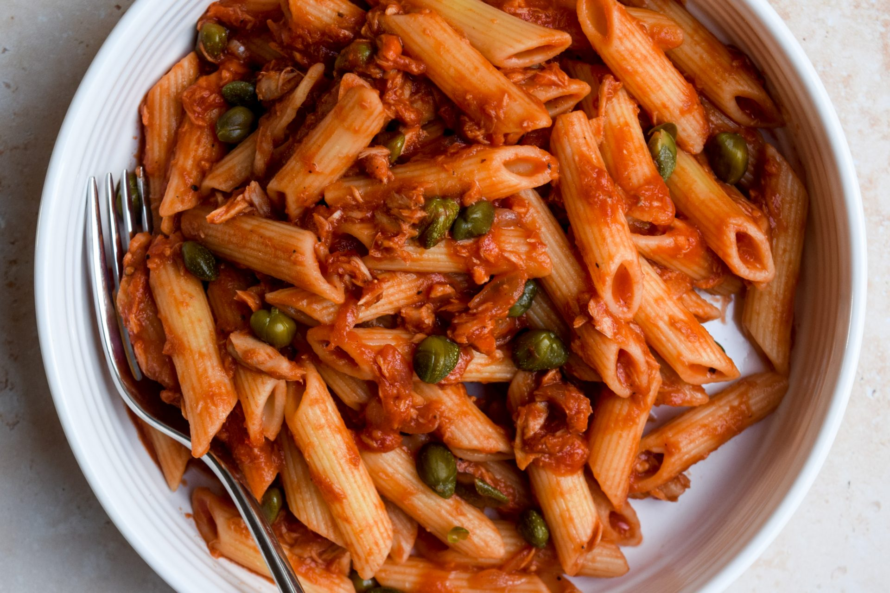
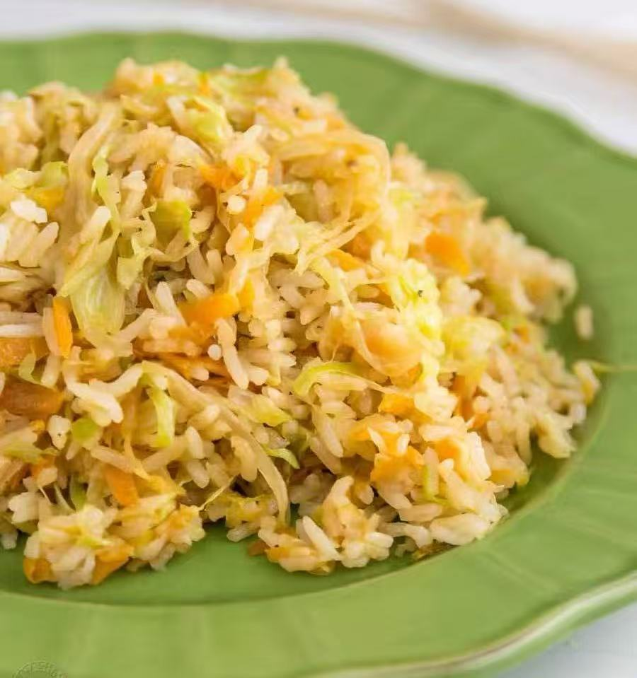
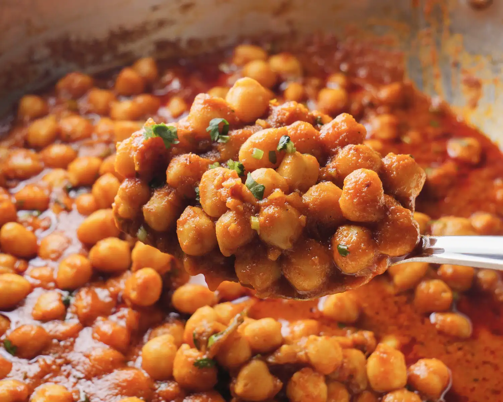
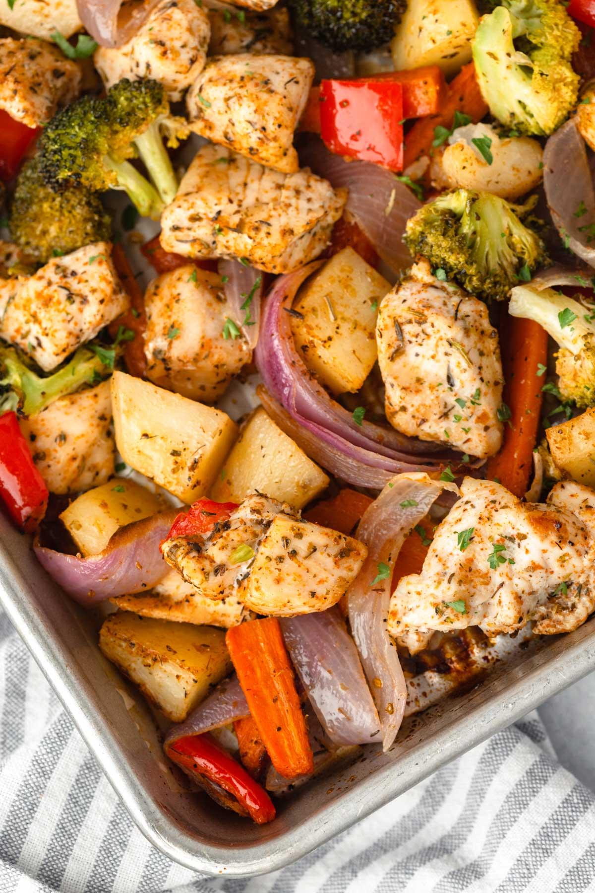
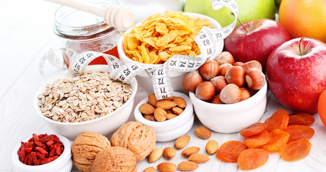
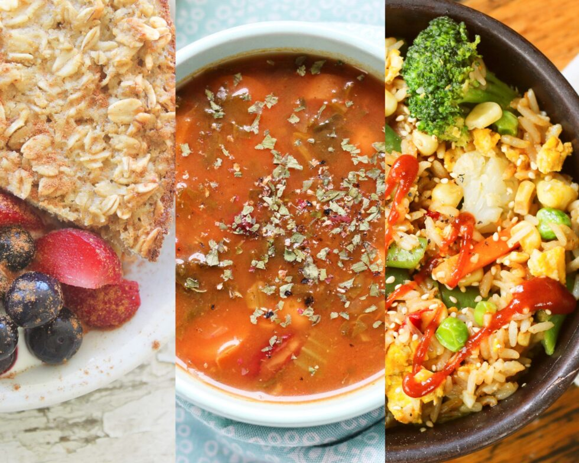

Overview: Eat well on a tight budget
One aspect of your life that can suffer when you’re on a budget is your diet. There are a few things, however, that we can do to ensure we keep our diets in check.
- Buy staples that stretch: rice, pasta, oats, eggs, frozen veg, canned beans/tuna.
- Season smart: salt, pepper, soy sauce, garlic/onion powder, chili flakes.
- Cook once, eat twice: make 2–3 portions and save one for tomorrow.
5-Minute Breakfasts (no stove or 1 pan)
Overnight Oats · 3 ways

Base: for 1/2 cup of oats, I use 1/2 cup of milk(soy), 1/4 cup of yogurt, 1 tsp honey. Chill overnight.
- Peanut banana: add 1 tbsp peanut butter + some banana slices.
- Berry yogurt: add 1/4 cup yogurt + frozen berries.
- Cocoa crunch: add 1 tsp cocoa + a few nuts or granola.
Microwave Scrambled Eggs

- In a mug: 2 eggs, pinch of salt/pepper, splash of milk. Whisk.
- Microwave 60–90s, stirring once.Season with pepper and serve. Serve with toast.
Yogurt Bowl

Plain yogurt + Fresh fruit + oats or cereal. Drizzle a little honey or maple syrup
Cheap Dinners (1 pan or pot)
Tomato Tuna Pasta

- Boil pasta. Reserve 1/4 cup pasta water.
- Pan: 1 tbsp oil, garlic/onion powder, 1 can diced tomato, pasta water; simmer 2–3 min.
- Add 1 can tuna, the pasta, and frozen peas. Season with salt/pepper or chili flakes.
Egg & Cabbage Rice

- Pan: oil + 2 eggs, scramble; push to side.
- Add shredded cabbage (or frozen veg) and a splash of soy sauce; stir-fry 3–4 min.
- Toss with warm rice; finish with sesame oil or pepper.
Chickpea Curry

- Pan: oil + curry powder (or paste), onion/garlic powder 30s.
- Add 1 can chickpeas + 1 can tomatoes + ¼ cup water. Simmer 8–10 min.
- Finish with salt/pepper; serve over rice.
Sheet-Pan Chicken & Veg

- Tray: diced potatoes,carrots,broccoli + 1 chicken thigh, oil, salt/pepper.
- Bake 25–30 min at 220°C/425°F, turning once. Add frozen broccoli last 10 min.
Smart Snacks

- Trail mix baggies: peanuts + raisins + corn flakes.
- Apple or banana with 1 tbsp peanut butter.
- Carrot sticks with hummus (canned chickpeas blended with lemon + garlic powder).
$25–30 Week Plan
One small grocery run makes about 9–12 meals. Buy the staples once, then rotate the 3-day menu below.

Staples list
- Rice (1 kg) or pasta (900 g)
- Oats (1 bag)
- Eggs (1 dozen)
- Frozen mixed vegetables (1–2 bags)
- Canned tomatoes (2), canned chickpeas (1), canned tuna (1)
- Plain yogurt (500 g), bananas (6), 1 bag apples
- Peanut butter, bread or tortillas
- Seasonings: salt, pepper, soy sauce, garlic/onion powder, chili flakes
- Cooking oil (small bottle)
3-Day Menu (repeat as needed)
Day 1
- Breakfast: Overnight oats with banana.
- Lunch: Tuna pasta (tuna + canned tomatoes + frozen veg).
- Snack: Apple with 1 tbsp peanut butter.
- Dinner: Egg-fried rice with mixed veg; soy sauce & pepper.
Day 2
- Breakfast: Egg-in-a-mug (microwave) + toast.
- Lunch: Chickpea curry with rice (chickpeas + tomatoes + curry powder).
- Snack: Plain yogurt with a banana.
- Dinner: Quick veggie pasta (frozen veg + pasta; garlic/onion powder).
Day 3
- Breakfast: Yogurt bowl (yogurt + oats) with fruit.
- Lunch: Egg & cabbage rice (2 eggs, shredded cabbage, soy sauce).
- Snack: Popcorn + any fruit.
- Dinner: Tomato-tuna rice; chili flakes optional.
Money-saving tip: pack one meal
Bring a reusable container; packing just one meal a day saves a lot over a week.
- Where to pack on campus: residence/shared kitchens, student centre or library microwave stations, lounge areas near food courts.
- Keep a small cutlery kit & napkin in your bag; add an ice pack if needed.
- Check building policies before cooking/heating food.